動画の時間処理の仕組み
Time Flow Sketch 1.5 が、読み込んだ動画のどの瞬間を、出力のいつ映すのか
図の曲線は、アプリの描画処理と同じ式で計算して描いています。
一言でいうと
- 素材の中に 2 つの枠があります。メモリに載る「読み込み範囲」と、実際に使う「使用範囲」です。時刻はどちらも、素材全長を 1 とした 0〜1 で数えます。
- 出力は常に「1 周◯秒」のループです。マップの明るさが決めるのは、各瞬間に使用範囲のどこを映すか（スリットの時間マップ）、どれだけずらすか（サーフェスの時間マップ）、どの速さで進むか（レートマップ）のいずれかです。
- 使用範囲が読み込み範囲からはみ出すと、はみ出した部分の絵は端のフレームで止まります（音は止まりません）。そのときは「この範囲で読み直す」でその場で読み直せます。
1. 全体の流れ
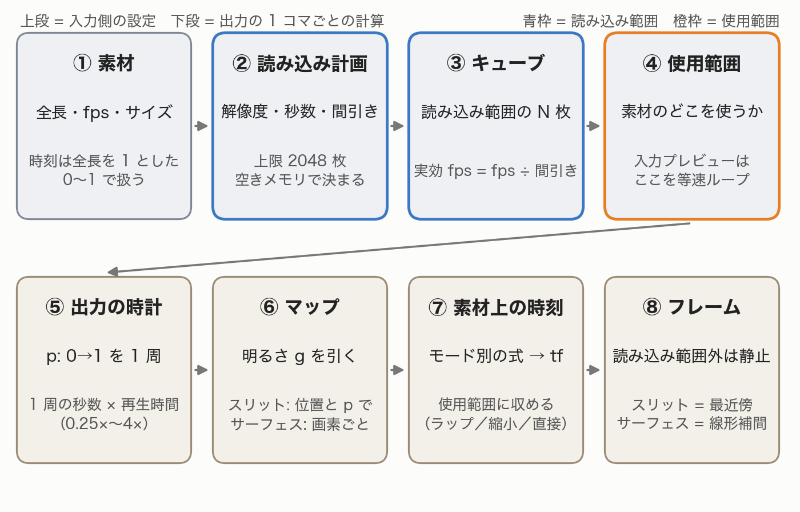
2. 3 つの範囲: 素材・読み込み範囲・使用範囲
- 素材 — ファイル全体。時刻の基準です。
- 読み込み範囲 — メモリに実際に載せた区間。自動の計画では、長さを空きメモリと上限 2048 枚で決めます。設定「映像の読み込み」で秒数を選んだときはその秒数のまま読み、メモリと上限はフレームの間引きだけを変えます。
- 使用範囲 — トップ画面の入力の下にある帯とハンドルで選ぶ区間。値は素材全体に対する割合で、読み込み範囲に対する割合ではありません。
- 使用範囲は、手で触る前なら自動で合わせられます。
- スリット×時間マップ: 読み込み範囲の先頭から「マップの時間軸の画素数 ÷ 30 秒（2〜120 秒）」。読み込み範囲は超えません。
- サーフェス×時間マップ: 読み込み範囲全体。
- 時間マップのこの 2 つは、モード・マップ・再生時間などを変えるたびに合わせ直します。
- レートマップ: 読み込み直後にだけ、読み込み範囲全体に合わせます。


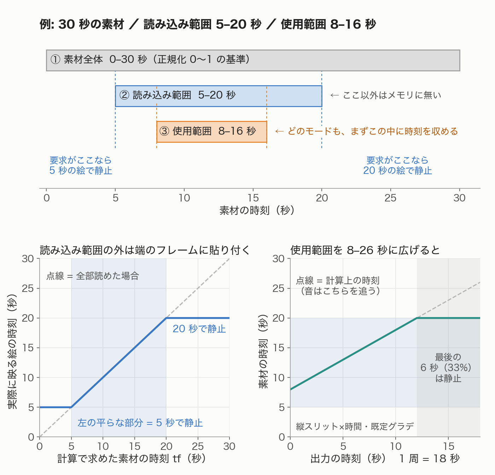
3. モードごとの時間の決まり方
出力には位置 p（0→1 で 1 周）という時計があります。スリットはマップの 1 行（横スリットは 1 列）を p で選びます。サーフェス×レートは画素ごとに独立した時計を持ち、サーフェス×時間は共通の時計から画素ごとに一定量ずれます。
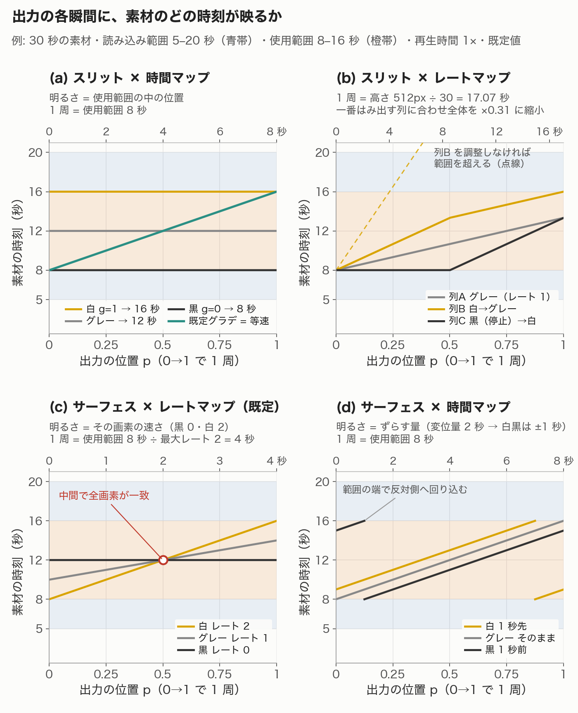
| モード | 明るさの意味 | 出力の各瞬間に映る素材の時刻 | 範囲の外 |
|---|---|---|---|
| スリット×時間 | 黒＝使用範囲の始め、白＝終わり | 始め + g × 使用範囲の長さ。既定のグラデーションは等速再生 | 出ない。1 周の継ぎ目で終わり→始めへ飛ぶ |
| スリット×レート | グレー＝等速、黒＝1−レート幅、白＝1+レート幅（幅が 1 を超えると黒は逆再生） | 速さを上から（横スリットは左から）足し合わせた軌道。開始位置から進む | 収まるよう全体をずらすか一律に縮める。回り込まない |
| サーフェス×レート（既定） | 画素の速さ。黒＝黒レート（既定 0）、白＝白レート（既定 2） | 同期点（既定は中間）で全画素が同期位置にそろい、そこから各自の速さで進む | 使用範囲の中で回り込む |
| サーフェス×時間 | グレー＝そのまま、白／黒＝変位量の半分だけ先／前 | 等速で進む時刻から (g − 0.5) × 変位量 秒ずらす | 使用範囲の中で回り込む |
| 空間マップ（共通） | どの列（横スリットは行）を映すか | 時間は変えない | — |
4. 出力の長さ
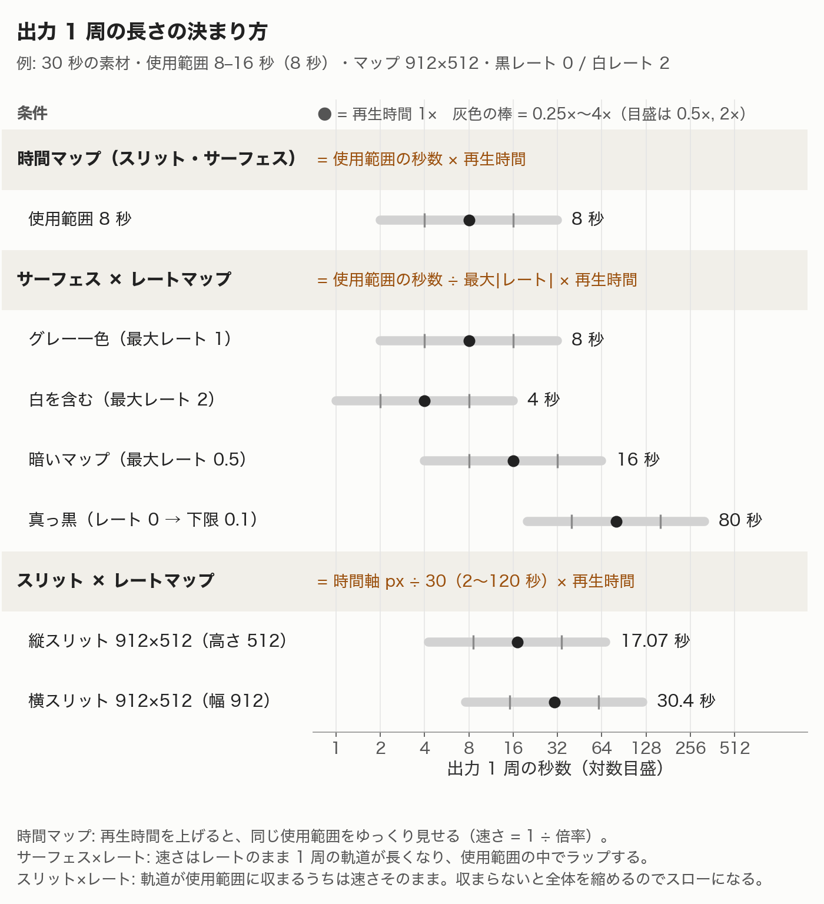
- 時間マップ — 使用範囲の秒数。再生時間 2× にすると、同じ範囲を 0.5× でゆっくり見せます。
- サーフェス×レート — 使用範囲の秒数 ÷ マップ内でいちばん速い画素のレート（逆再生は絶対値）。最速の画素が 1 周でちょうど使用範囲を渡る長さです。
- スリット×レート — マップの時間軸の画素数 ÷ 30（2〜120 秒）。素材や使用範囲の長さは見ません。たとえば縦スリット・912×512 のグレー一色で使用範囲 8 秒なら、17.07 秒かけて 8 秒を見せるので約 0.47× になります。
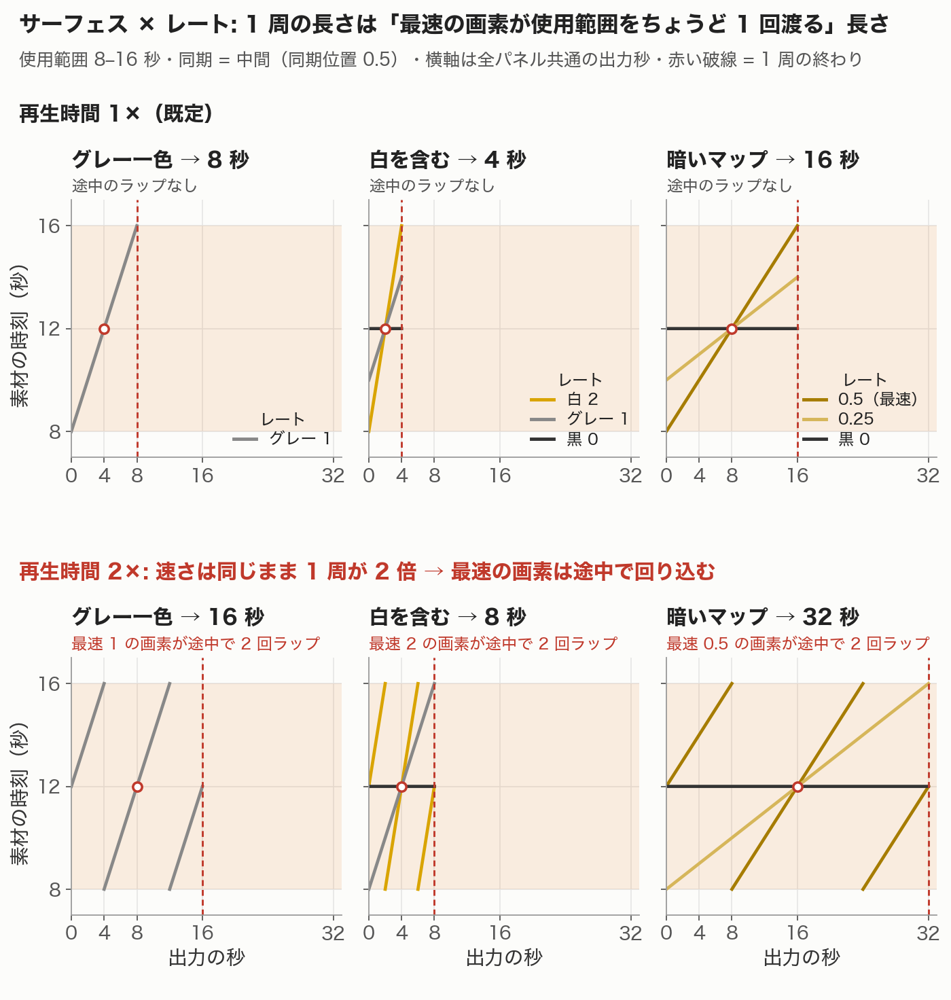
5. 読み込みとフレームの間引き
- 新しい素材では計画が自動で決まります。解像度は長辺 1280 以下になる倍率（等倍・1/2・1/4）から始めます。
- 全体が入れば全体を読みます。入らなければ、まず秒数を削り（4 秒までは残す）、次にフレームを間引きます（15fps まで）。それでも無理なら解像度を 1 段下げて、全体が入るかから判定し直します。1/4 でも 15fps を割るときは、そのまま 1/4・4 秒で間引きます。
- 初期の計画は常に 0 秒から読みます。設定で秒数を変えると、開始は使用範囲の先頭になります。手動のときは fps の下限が無く、8fps 未満で警告が出ます。
- 間引きの量は読み込む瞬間の空きメモリで決まるので、毎回変わることがあります。
- 例: 1920×1080・120fps・9.4 秒の素材で予算が 800MB なら、960×540・先頭 4.0 秒・2 コマに 1 枚（60fps）で約 240 枚になります。

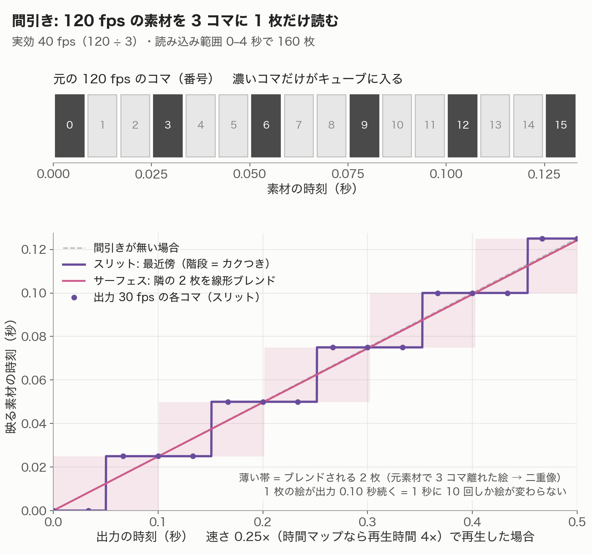
6. 入力映像（プレビュー）と使用範囲の操作
- 入力ビューは出力とは別の時計で、使用範囲を実際の速さで繰り返します。
- 帯をタップ／なぞると、入力の再生位置だけが動きます。出力の赤ラインや出力のバーを動かしても、入力は動きません。ただし入力の音がオンの間は位置が音に従うので、帯をタップしてもすぐ戻ります。
- 開始／終了ハンドルをドラッグしている間だけ、その端の瞬間が映ります。指を離すと再生中の位置の絵に戻ります。
- 帯を長押ししてからドラッグすると、長さを保ったまま範囲を動かせます。
- 同じ帯は、入力映像の全画面表示の下にもあります。
- 使用範囲が読み込み範囲の外にかかると、入力ビューもその区間は端のフレームで止まり、「読み込み範囲の外は動きません」と表示されます。横の「この範囲で読み直す」を押すと、解像度と読む秒数はそのままで、使用範囲が真ん中に来る位置へ読み込み範囲を移して読み直します（使用範囲のほうが長ければその長さを読み、メモリに収まらない分は間引きが増えます）。
- 入力の音をオンにすると、使用範囲を等速で繰り返す音に映像の位置が合います。出力の音とは同時に鳴りません。


7. 音と書き出し
- 出力の音は、映像と同じ計算で素材の時刻を追います。読み込み範囲の制限を受けず素材全体の音声を使うので、絵が止まっていても音は進みます。
- 横スリットの音はモノラルです。
- 書き出す枚数は「1 周の秒数 × fps」の切り捨て（既定 30fps）。最初と最後のコマが重ならないので、そのままループできます。
- 書き出しの解像度は読み込みの解像度のまま、形式は H.264 の mp4 です。
8. つまずきやすい点
- スリット×レートでは「グレー＝等速」にならないことがあります。使用範囲が「マップの時間軸の画素数 ÷ 30 × 再生時間」秒より短いと、全体が一律にスローになります。
- スリット×レートのずらし・縮小はマップ全体で 1 組です。1 列だけ極端なレートや逆再生を置くと、他の列の動きも変わります。
- サーフェス×レートは、白い画素が 1 つあるだけで尺が半分になります。ほぼ真っ黒だと使用範囲の 10 倍まで伸びます。
- 再生時間の効き方はモードで違います。時間マップはスローになります。サーフェス×レートは速さそのままで軌道が伸び、使用範囲の中で回り込みます。スリット×レートは軌道が使用範囲に収まるうちは速さそのまま、収まらなくなると全体が一律に縮むので、時間マップと同じようにスローになります。
- 同期（始点／中間／終点）を切り替えると、同期位置はそれに合わせた値（0／0.5／1）になります。同期位置をずらすと、最速の画素が途中でジャンプすることがあります。
- 開始位置（スリット×レート）と同期位置（サーフェス×レート）は、使用範囲の中での 0〜1 です。
- 使用範囲を一度手で触ると、自動では合わせ直しません（別の素材を読み込むと自動に戻ります）。
- スリット×時間の「時間 最小／最大」は使用範囲と同じ値です。最小を最大より大きくすると逆再生になります。
編集画面の各項目の横にある「i」ボタンでも、その項目の説明を確認できます。


How time processing works
Which moment of your video Time Flow Sketch 1.5 shows at each instant of the output
The curves in the figures are computed with the same formulas the app uses to render.
In short
- There are two spans inside a clip: the loaded range, which is what sits in memory, and the use range, which is what the output actually uses. Both are measured as 0–1 of the whole clip.
- The output is always a loop of a fixed number of seconds. A map’s brightness decides one of three things: which point in the use range to show (slit × time map), how far to shift it (surface × time map), or how fast to advance (rate map).
- If the use range extends past the loaded range, the picture freezes on the edge frame for that part (the sound keeps going). Reload here fixes that on the spot.
1. The pipeline
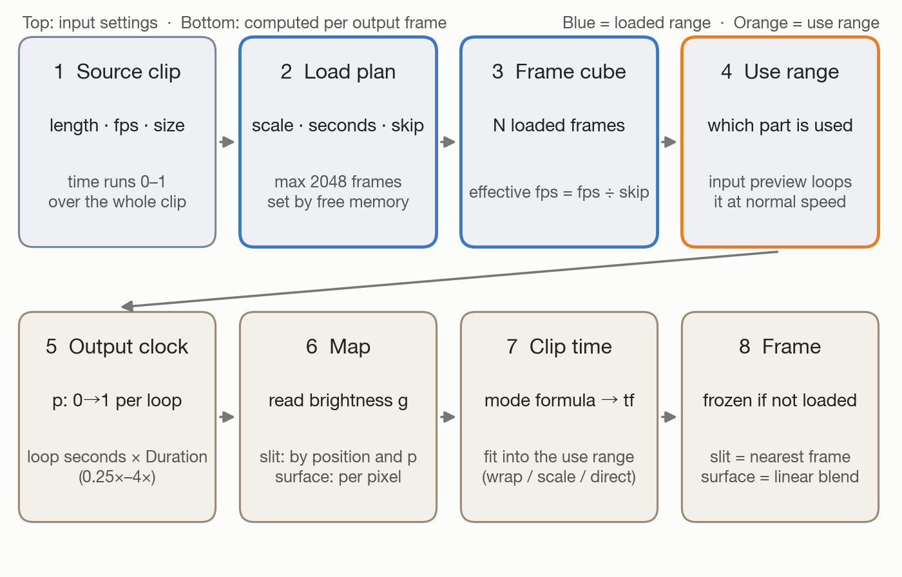
2. Three spans: clip, loaded range, use range
- Clip — the whole file. All times are measured against it.
- Loaded range — the part actually held in memory. The automatic plan sets its length from free memory and the 2048-frame limit. If you choose Seconds to load in Settings → Video Loading, that length is kept and memory only changes how many frames are skipped.
- Use range — the span you pick with the band and handles under the input on the main screen. It is a fraction of the whole clip, not of the loaded range.
- Until you touch it, the use range is fitted automatically:
- Slit × time map: from the start of the loaded range, the map’s time axis in pixels ÷ 30 seconds (2–120 s), never past the loaded range.
- Surface × time map: the whole loaded range.
- For these two, it is re-fitted whenever you change the mode, the map, Duration and so on.
- Rate maps: fitted to the whole loaded range only right after loading.


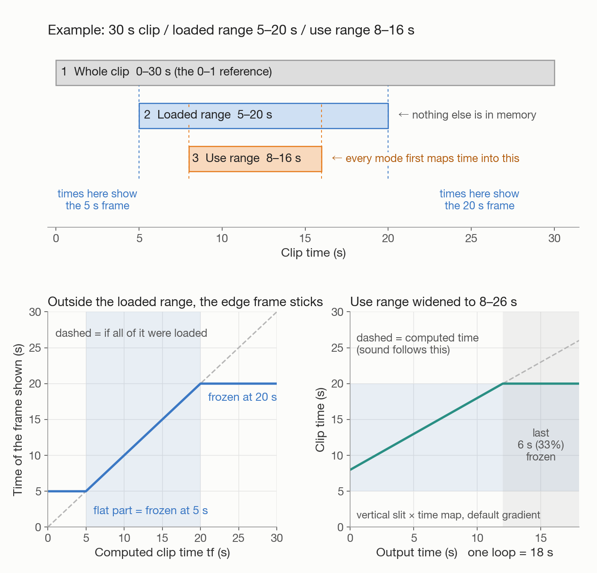
3. How each mode decides the time
The output has a clock, position p, running 0→1 once per loop. A slit mode uses p to pick one row of the map (one column for a horizontal slit). Surface × rate gives every pixel its own clock; surface × time offsets every pixel by a fixed amount from a shared clock.
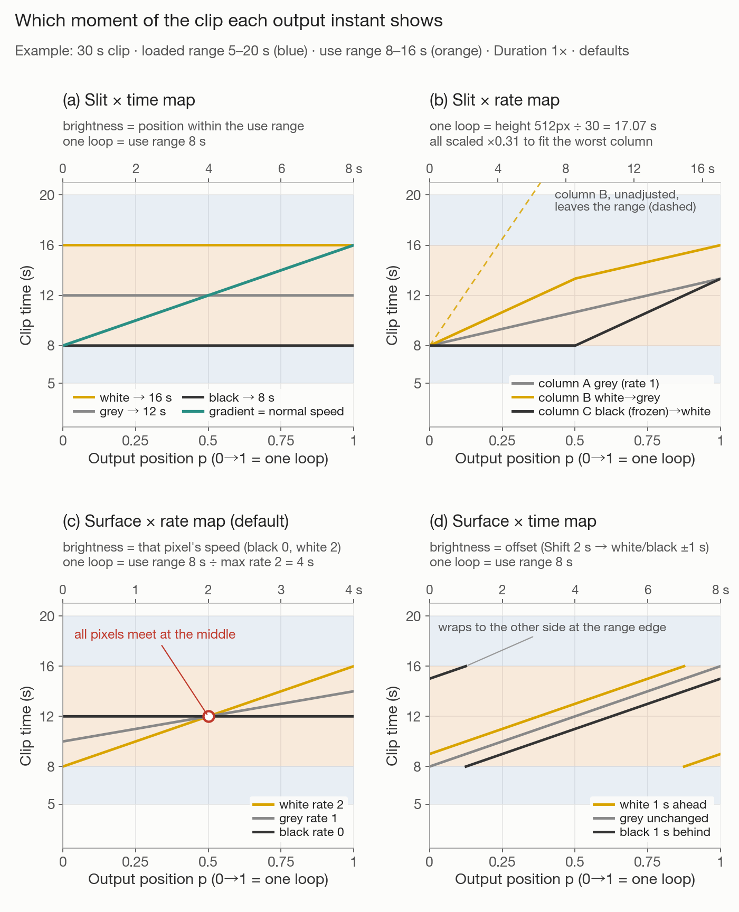
| Mode | What brightness means | Clip time shown at each output instant | Outside the range |
|---|---|---|---|
| Slit × time map | Black = start of the use range, white = end | start + g × use-range length. The default gradient plays at normal speed. | Never leaves it; jumps from end to start at the loop seam |
| Slit × rate map | Grey = normal speed, black = 1 − Rate range, white = 1 + Rate range (above 1, black plays in reverse) | A path made by summing speeds from the top (from the left for a horizontal slit), starting at Start point | Shifted or scaled down evenly to fit; no wrapping |
| Surface × rate map (default) | That pixel’s speed: black = Black rate (default 0), white = White rate (default 2) | Every pixel meets at Anchor at at the anchor moment (Middle by default), then runs at its own speed | Wraps within the use range |
| Surface × time map | Grey = unchanged, white/black = half of Shift ahead/behind | Normal-speed time offset by (g − 0.5) × Shift seconds | Wraps within the use range |
| Space map (any mode) | Which column (row for a horizontal slit) to show | Does not change time | — |
4. How long the output is
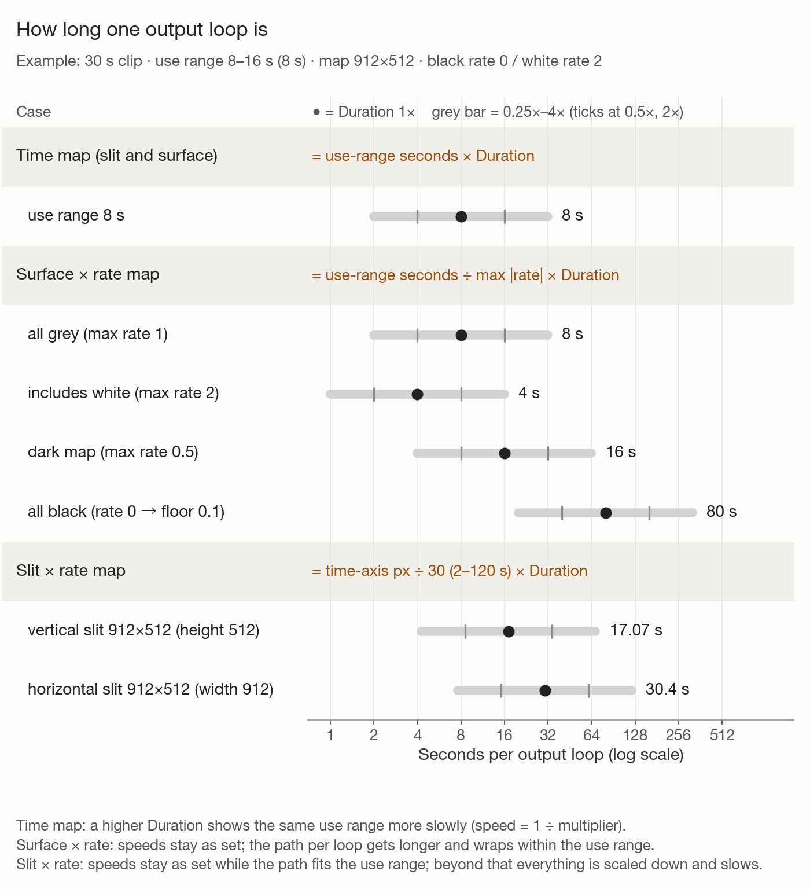
- Time maps — the use range in seconds. At Duration 2× the same range plays at 0.5×.
- Surface × rate — the use range in seconds ÷ the fastest rate in the map (ignoring direction): exactly the time the fastest pixel takes to cross the use range once.
- Slit × rate — the map’s time axis in pixels ÷ 30 (2–120 s), regardless of the clip or the use range. For a vertical slit on an all-grey 912×512 map with an 8-second use range, 8 seconds are shown over 17.07 seconds, about 0.47×.
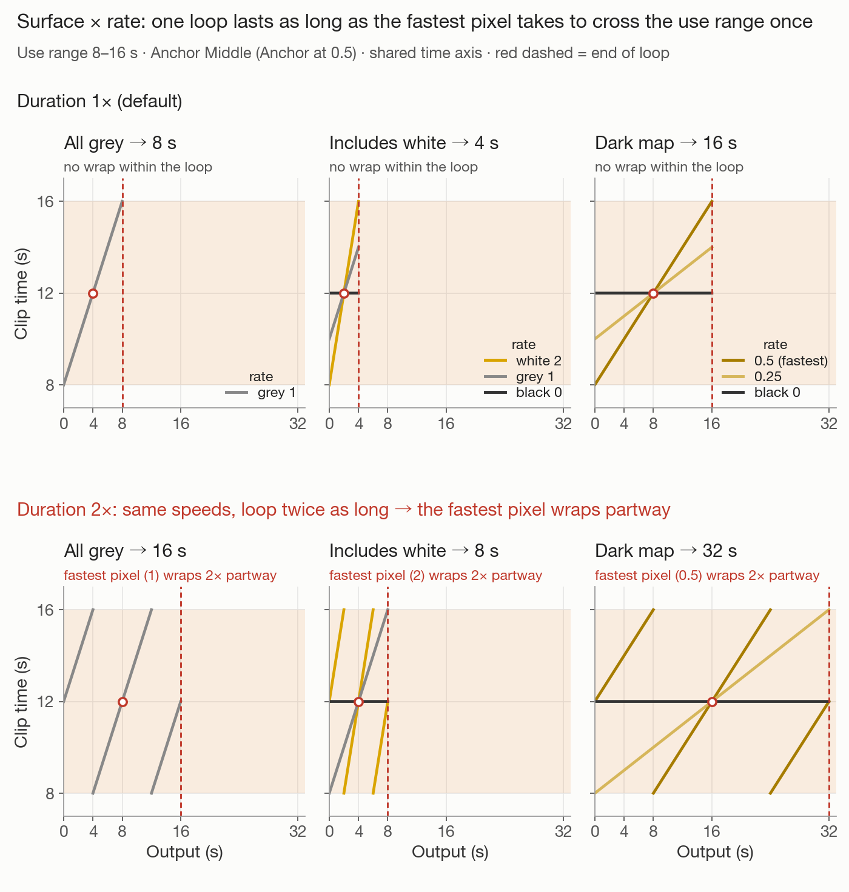
5. Loading and frame skipping
- For a new clip the plan is chosen automatically. Resolution starts at the largest scale (full, ½, ¼) whose long side is 1280 or less.
- If the whole clip fits, all of it is loaded. If not, seconds are cut first (down to 4 s), then frames are skipped (down to 15 fps). If that is still not enough, resolution drops one step and the check starts again from the whole clip. If even ¼ would fall below 15 fps, it loads ¼ and 4 seconds and skips frames as needed.
- The automatic plan always starts at 0 seconds. When you change the seconds in Settings, loading starts at the start of the use range. With a manual choice there is no fps floor; a warning appears below 8 fps.
- How many frames are skipped depends on free memory at the moment of loading, so it can differ from one load to the next.
- Example: a 1920×1080, 120 fps, 9.4-second clip with an 800 MB budget loads at 960×540, the first 4.0 seconds, 1 frame in 2 (60 fps) — about 240 frames.

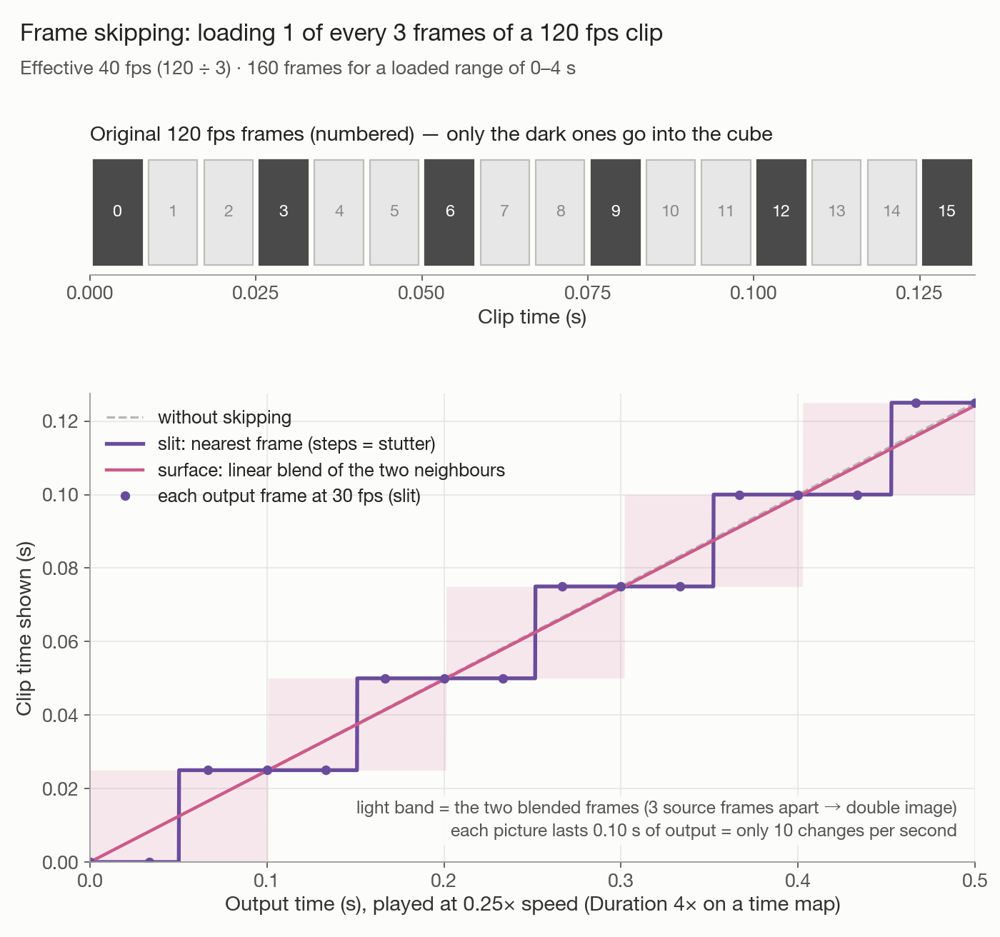
6. The input preview and the use range
- The input view runs on its own clock, separate from the output, looping the use range at real speed.
- Tapping or sliding along the band moves only the input’s playhead. Moving the output’s red line or bar does not move the input. While the input sound is on, the position follows the sound, so a tap on the band snaps back.
- While you drag the start or end handle, the input shows that edge’s frame; release it and the picture returns to the playing position.
- Press and hold the band, then drag, to slide the whole range without changing its length.
- The same bar also appears under the input’s full-screen view.
- If the use range extends past the loaded range, the input freezes on the edge frame for that part too, and Frozen outside the loaded part appears with a Reload here button. It reloads with the same resolution and seconds, moving the loaded range so the use range sits in the middle. If the use range is longer than that, it loads the whole use range and skips more frames if memory requires it.
- Turning on the input sound locks the picture to audio looping the use range at normal speed. It does not play at the same time as the output sound.


7. Sound and export
- The output sound follows clip time with the same calculation as the picture. It uses the whole clip’s audio, not just the loaded range, so sound keeps moving even where the picture is frozen.
- Horizontal slit sound is mono.
- The exported frame count is loop seconds × fps, rounded down (30 fps by default). The first and last frames do not duplicate each other, so the file loops seamlessly.
- Exports use the loaded resolution and are H.264 MP4.
8. Common surprises
- On a slit × rate map, grey is not always normal speed. If the use range is shorter than (time-axis pixels ÷ 30 × Duration) seconds, everything slows down evenly.
- The shift or scale applied on a slit × rate map is one setting for the whole map. One column with an extreme rate or reverse playback changes how every other column moves.
- On a surface × rate map, a single white pixel halves the length. A map that is almost all black can stretch it to 10× the use range.
- Duration works differently per mode. Time maps slow down. Surface × rate keeps the speeds and lengthens the paths, which wrap within the use range. Slit × rate keeps the speeds while the path fits the use range; once it no longer fits, everything is scaled down evenly and slows, like a time map.
- Switching Anchor (Start / Middle / End) sets Anchor at to match (0 / 0.5 / 1). Moving Anchor at can make the fastest pixels jump mid-loop.
- Start point (slit × rate) and Anchor at (surface × rate) are 0–1 within the use range.
- Once you touch the use range by hand, it is no longer re-fitted automatically (loading a different clip resets that).
- On a slit × time map, Time from / Time to are the same values as the use range. Setting Time from above Time to plays in reverse.
The “i” button next to each setting in the editor explains that setting in the app, too.